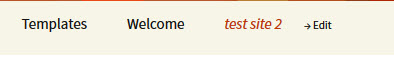

| Description |
|---|
| Front Plugin Editor allows you to edit the elements of any content from the frontend, when you activate this plugin on the part of the frontend can display an Edit link next to any such item: Menus, Categories, Post Tag, Post, ect. |
| Configuration | |
|---|---|
|  | After activating the plugin, go to the frontend site in the site menu will see a link Edit , this link allows you to edit the site Menu. |